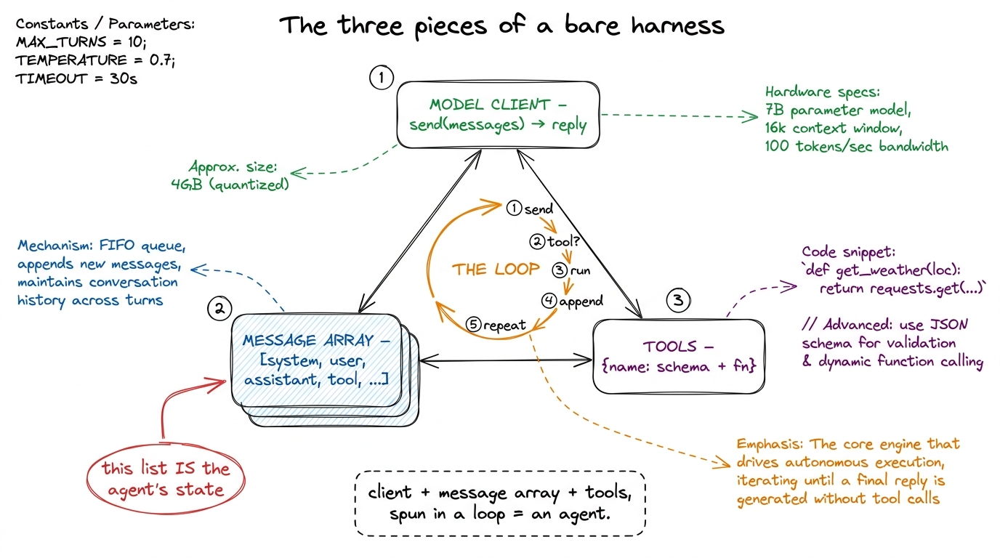
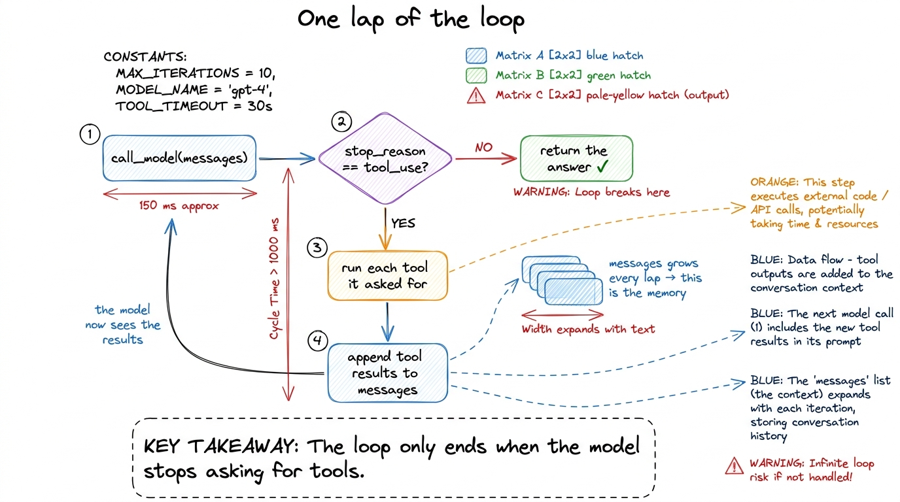

Build: your first bare harness BUILD
Everything in the last few chapters has been mental scaffolding. Now we write code, and by the end of this page you will have something small enough to hold in your head all at once and yet genuinely an agent: it will decide, act, see the result of its action, and decide again, all on its own, until the job is done. We are building Layer 1 — the loop — with the thinnest possible everything-else, so nothing distracts from the one idea that matters.
We will write it in Python against a chat-style model API, in the shape every provider shares.1 We keep the provider details behind a tiny model client so the harness stays model-agnostic — the same lesson pi teaches with its models.json. Here we inline it to keep the loop in one screen; swapping Anthropic for OpenAI later is a two-line change. Nothing here is framework-specific; you could port it to TypeScript in an afternoon.
The three pieces we need
A bare harness is exactly three things: a model client (one function that sends messages and gets a reply), a message array (the running conversation, which is the agent's memory), and a loop that ties them together with a set of tools the model is allowed to call.

figure rendering · The three pieces — model client, message array, and tools — spun togetLet me build them in that order.
Piece 1: the model client
One function. It takes the conversation so far plus the list of tools the model may use, and returns the model's next message.
import anthropic
client = anthropic.Anthropic() # reads ANTHROPIC_API_KEY from the env
def call_model(messages, tools):
return client.messages.create(
model="claude-sonnet-4-6",
max_tokens=4096,
system=SYSTEM_PROMPT,
messages=messages,
tools=tools, # the schemas the model is allowed to call
)That's the entire "AI" part of our agent. Everything else we write is the harness around it. Notice already that messages and tools are inputs we control — the harness decides what the model sees. Hold that thought; it is the seed of context engineering.
Piece 2: the tools (schema + function)
A tool, from the model's side, is a name, a description, and a JSON schema for its arguments — a contract it reads to know what it can do and how to call it.2 We treat this contract as the whole subject of tool schemas as contracts. The shape of the schema is how you teach the model to use the tool correctly, so it deserves real care. Here we define two tiny ones just to make the loop concrete. From our side, each tool is also an actual function we run when the model asks for it. So a tool has two halves that we keep side by side.
import subprocess, pathlib
TOOLS = [
{
"name": "read_file",
"description": "Read a text file and return its contents.",
"input_schema": {
"type": "object",
"properties": {"path": {"type": "string"}},
"required": ["path"],
},
},
{
"name": "run_bash",
"description": "Run a shell command and return stdout+stderr.",
"input_schema": {
"type": "object",
"properties": {"cmd": {"type": "string"}},
"required": ["cmd"],
},
},
]
def run_tool(name, args):
if name == "read_file":
return pathlib.Path(args["path"]).read_text()
if name == "run_bash":
r = subprocess.run(args["cmd"], shell=True, capture_output=True, text=True)
return (r.stdout + r.stderr)[:4000]
return f"unknown tool: {name}"Two things are missing here that a real harness must not skip — there is no permission gate before run_bash, and no sandbox. We are leaving them out on purpose so the loop is naked and obvious; we add exactly those in Layer 2, and you will feel viscerally why they matter the first time the model runs a command you didn't expect.
Piece 3: the loop
Now the heart. Read it slowly — it is fifteen lines and it is the whole of agency.
def run_agent(user_request):
messages = [{"role": "user", "content": user_request}]
while True:
reply = call_model(messages, TOOLS) # 1. ask the model
messages.append({"role": "assistant", "content": reply.content})
if reply.stop_reason != "tool_use": # 2. no tool? we're done
return text_of(reply)
tool_results = []
for block in reply.content: # 3. run every tool it asked for
if block.type == "tool_use":
out = run_tool(block.name, block.input)
tool_results.append({
"type": "tool_result",
"tool_use_id": block.id,
"content": str(out),
})
messages.append({"role": "user", "content": tool_results}) # 4. feed results back
# 5. loop: the model now sees the results and decides what to do nextTrace one lap. We put the user's request into the message array and call the model. The model replies — maybe with text, maybe asking to use a tool. We append its reply to the array (this is the agent remembering what it just decided). If it didn't ask for a tool, it's finished and we return its answer. If it did, we run each requested tool, wrap the outputs as tool_result messages, append those to the array, and loop. Next time around, the model sees its own request and the results, and decides the next move.

figure rendering · One lap of the loop: call, check for a tool request, run it, append thThat is the whole thing. Give it a request like "Read pyproject.toml and tell me the Python version, then list the test files" and watch it: it will ask to read_file, get the contents, then ask to run_bash with an ls, get the listing, and finally answer in plain text — three laps of the loop, no human in between.
The subtlety hiding in "we're done"
The one line worth staring at is the stop condition: if reply.stop_reason != "tool_use": return.3 We give stop conditions their own chapter because getting this wrong is how you get an agent stuck in an infinite loop of politely re-reading the same file forever. Real harnesses add a max-turns guard and an interrupt path on top of the model's own signal. The loop keeps going as long as the model keeps asking for tools, and stops the instant it produces a plain answer instead. The agent decides when it is finished — not us. That inversion of control is precisely what separates an agent from a script, and it is why the loop, not the model, is Layer 1 of the harness.
What you built, and what it's still missing
In about forty lines you have a real coding agent: it plans, acts on your actual machine, observes results, and iterates to a conclusion on its own. That is not a toy — it is the identical skeleton inside Claude Code and pi. What it is missing is everything that makes such an agent survivable: it will happily run a dangerous command (Layer 2 fixes that), it will choke when the conversation outgrows the context window (Layer 3), it loses all its work if the process dies (Layer 4), and it can't split a job too big for one context (Layer 5).
So we have our honest baseline — the smallest thing that genuinely acts — and a clear list of what to build next. That is the rhythm for the rest of the book: add one layer, feel exactly what it buys you, and watch your harness get closer to something you would actually trust. Next we give it hands, safely: tool schemas as contracts.